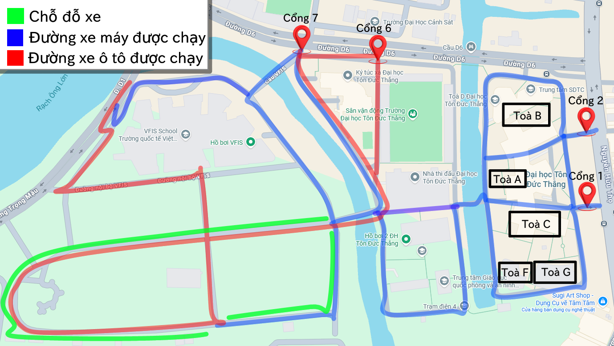

Tru Ly gửi bạn nò~
Nhớ đọc nhennn~
- Trường T chặn WiFi – mọi người nhớ liên hệ nhau qua số điện thoại nhé. SĐT của tui: 0382060529 hoặc 0352354872.
- Ngày lễ đông đến mức Google Maps báo đường đỏ, nên đi sớm hơn dự kiến một chút để vào được bãi xe trong trường (xem tab gửi xe). Nếu book xe, ưu tiên cổng 1; cổng 3 → 7 rất dễ kẹt, gần như không nhúc nhích.
- Mang theo quạt cầm tay nếu có – trường nhiều cây nhưng ngày lễ vẫn dễ ngộp trong thời tiết ẩm ương này.
- Mang sạc dự phòng nếu có – check-in thả ga dễ cạn pin lúc nào không hay.
- Chưa rõ điều gì, cứ hỏi bảo vệ hoặc sinh viên trường T – mọi người sẽ chỉ dẫn tận tình.
- Cuối cùng, hãy thật xinh đẹp trong những outfit lịch sự để buổi lễ diễn ra tốt đẹp nhé.
Tin yêu ♡
Sơ đồ gửi xe
